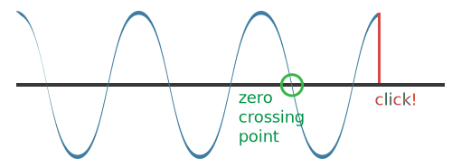
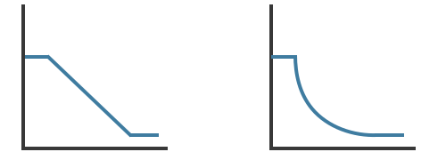

Web Audio: the ugly click and the human ear
While playing around with a Web Audio demo, I noticed a clicking sound every time a I stopped an oscillator.
var context = new AudioContext();
var oscillatorNode = context.createOscillator();
oscillatorNode.connect(context.destination);
oscillator.start();
oscillator.stop(); // click!
As the noob I am, I wondered why this happened. Could it be an implementation problem on the browser? Not likely, since this happened in all browsers I tested.
Turns out the click sound happens because I’m abruptingly cutting the sound wave at a point other than the natural zero crossing:

Is there a way to avoid this clicking sound then?
We have two options:
- Stopping the sound only at zero-point crossings, or
- Creating a node gain to gradually decrease the gain to zero before stopping
I will focus on the second option since - luckily - Web Audio API has us covered.
Gradual changes to an audioParam value
Exponential vs linear
There are several Web Audio functions that can gradually change an audioParam:
linearRampToValueAtTime(value, endTime); // linear
exponentialRampToValueAtTime(value, endTime); // exponential
setTargetAtTime(target, startTime, timeConstant); // exponentialOne difference between them is the easing function that is used to change the audio param value; either linear (left) or exponential (right).

Mozilla has a piece of advise to those unsure of which one to use:
Exponential ramps are considered more useful when changing frequencies or playback rates than linear ramps because of the way the human ear works.
And they are right: the human ear perceives sound on a logarithmic principle. An A3 note is a frequency of 220Hz, whereas A4 is 440Hz and A5 is 880Hz. Loudness also works this way: a tenfold increase in sound power could be described as being twice as loud. Hence, using an exponential gain decrease will be perceived as linear by the human ear.
exponentialRampToValueAtTime vs setTargetAtTime
We will choose and exponential way of gradually decreasing the gain. This leaves us with exponentialRampToValueAtTime vs setTargetAtTime. Some difference between them are:
-
exponentialRampToValueAtTimewill get to the value precisely at the time specified. However, using this function, an exponential ramp to zero is not possible because of the math used to calculate the values over time. -
setTargetAtTimeexponentially moves towards the value given by the target parameter, but instead of specifying an end time, we give the function an exponential decay rate after which the value will decrease about 2/3rds. This means we can ask the function to go all the way down to zero. Theoretically it will never really reach zero since it will be exponentially decaying, but in real life it will as soon as the value is too small to be represented with a float.
Let’s choose setTargetAtTime because we want to go all the way down to zero and because we are not too worried about getting there at a super precise time. As long as the fade-out time is fast enough to be imperceptible but slow enough to remove the click, we will be happy.
Using setTargetAtTime to remove the click
Before trying out setTargetAtTime to get rid of the ugly click, we must be of a couple gotchas:
- We must choose a decay time after which the gain value will decrease about 2/3rds. After a bit of experimenting, I found out that a decay time of 15 milliseconds gives the impression of being immediate but at the same time removes the click. Remember: Web Audio uses seconds instead of milliseconds!
var context = new AudioContext();
var oscillator = context.createOscillator();
var gainNode = context.createGain();
oscillator.connect(gainNode);
gainNode.connect(context.destination)
oscillator.start();
stopButton.addEventListener('click', function() {
gainNode.gain.setTargetAtTime(0, context.currentTime, 0.015);
});
There’s no more click. We are all happy.
Using exponentialRampToValueAtTime to remove the click
Since we are at it, let’s see how it would’ve turned out using exponentialRampToValueAtTime - which I found to be a bit trickier.
One gotcha is this part of the Web Audio specification:
(exponentialRampToValueAtTime) Schedules an exponential continuous change in parameter value from the previous scheduled parameter value to the given value.
From the previous scheduled parameter value means that you must first set the audioParam with an automation method before using the ramping function. This usually means using setValueAtTime() instead of setting the audioParam value directly (in other words, don’t do this: gainNode.gain.value = someValue).
Another gotcha also described in the spec:
It is an error if either V0 or V1 is not strictly positive. This also implies an exponential ramp to 0 is not possible.
So we must choose a tiny value, but not zero. As mentioned earlier, we can’t ramp to zero. Also, this time we will use 30 milliseconds as the time for the ramp to occur (this is the total transition time, not the decay time used in setTargetAtTime).
var context = new AudioContext();
var oscillator = context.createOscillator();
var gainNode = context.createGain();
oscillator.connect(gainNode);
gainNode.connect(context.destination)
oscillator.start();
stopButton.addEventListener('click', function() {
// Important! Setting a scheduled parameter value
gainNode.gain.setValueAtTime(gainNode.gain.value, context.currentTime);
gainNode.gain.exponentialRampToValueAtTime(0.0001, context.currentTime + 0.03);
});
Also works, we’ve gotten rid of the click.